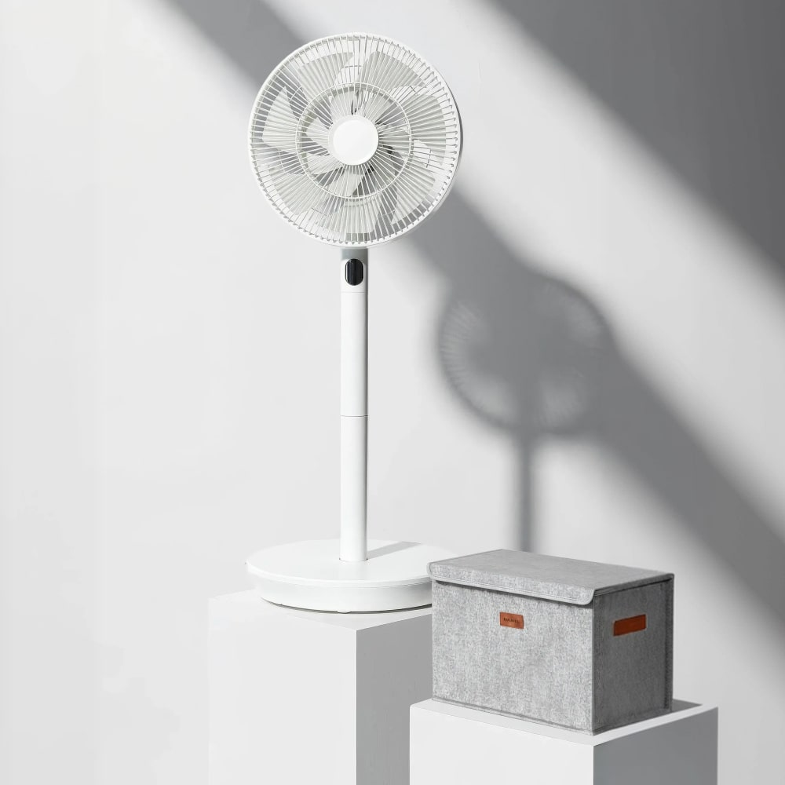
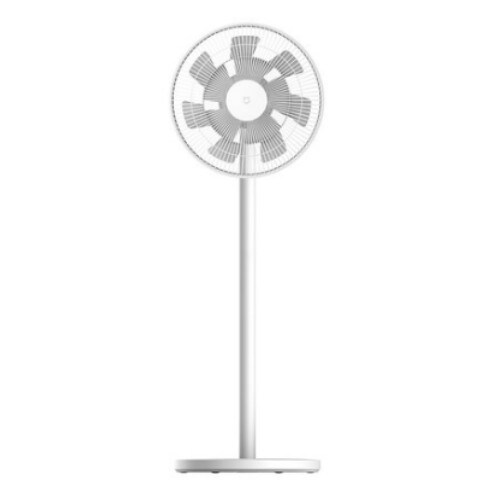
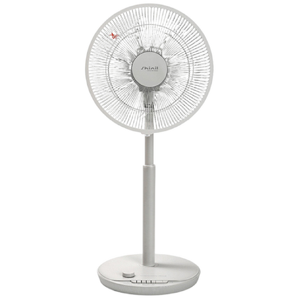
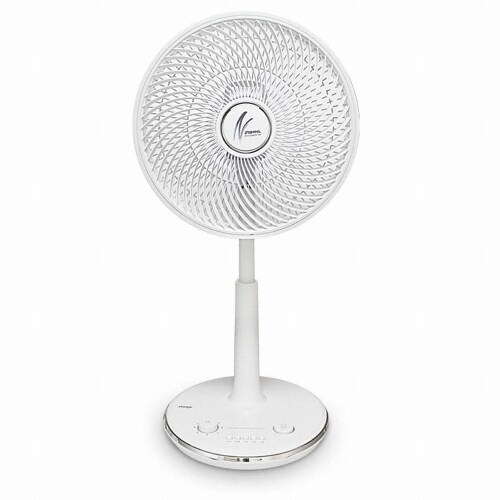
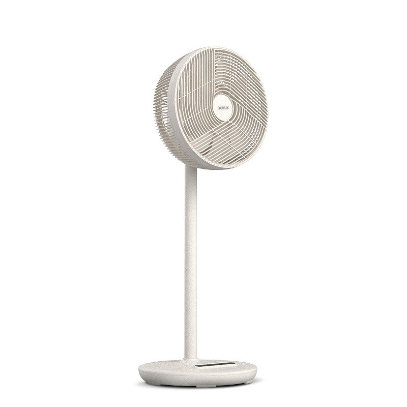

--- title: "2026 선풍기 추천 비교 서큘레이터 — BLDC 모터 4개월 실비용까지 다 따져봤습니다" description: "2026 선풍기 추천 비교 서큘레이터 완벽 정리. 침실에는 한일 BLDC, 거실에는 샤오미 무선선풍기 2 Pro, 에어컨 보조용 서큘레이터는 신일 또는 보국 제로팬을 추천합니다. AC와 BLDC 모터를 4개월 실사용 전기요금까지 계산해 진짜 차이를 정리했어요." keywords: ["선풍기 추천", "서큘레이터 추천", "BLDC 선풍기", "무선 선풍기", "샤오미 선풍기", "신일 선풍기", "한일 선풍기", "2026 선풍기"] date: 2026-05-07 category: "가전 추천" readingTime: "약 10분" ---
2026 선풍기 추천 비교 서큘레이터 — BLDC vs AC, 4개월 실비용까지 따져봤습니다
선풍기는 매년 사는 가전이 아니에요. 한 번 사면 5년, 7년 쓰는 거잖아요. 그런데 검색해보면 "TOP 10" 식으로 모델만 나열한 글이 대부분이라 솔직히 답답하더라고요. 진짜 궁금한 건 BLDC가 정말 AC보다 나은가, 선풍기랑 서큘레이터 둘 다 사야 하는가 같은 본질적인 질문이거든요.
이번 글에서는 좀 다르게 접근했어요. 6월~9월 4개월 실사용 전기요금을 BLDC와 AC로 직접 계산하고, 침실/거실/에어컨 보조라는 용도별로 정답을 정리했습니다. 작년 여름에 한일 BLDC를 침실에 들이고, 거실엔 샤오미 4세대 무선을 같이 쓰면서 비교했던 경험까지 녹였어요.
5초 요약 — 용도별 선풍기·서큘레이터 추천
복잡한 거 다 빼고 용도별로 정리하면 이렇게 나옵니다.
| 용도 | 추천 모델 | 가격 | 모터 | 4개월 실비용 | |------|-----------|------|------|---------------| | 침실·아이방 (저소음) | 한일 BBF-BL12W BLDC 써큘레이터 | 99,000원 (정가 129,000원) | BLDC | 약 103,000원 | | 거실·다용도 (무선) | 샤오미 무선선풍기 2 Pro (BPLDS03DM) | 99,200원 (50% 할인, 정가 198,400원) | BLDC | 약 103,200원 | | 가성비 입문 (유선 AC) | 신일 SIF-E14AT | 68,230원 (정가 95,000원) | AC | 약 76,000원 | | 에어컨 보조 (서큘레이터) | 신일 SIF-D14BN 서큘형 | 약 72,000원 | AC | 약 78,000원 | | 프리미엄 무선 서큘 | 보국 제로팬 BKF-21W30DC | 약 125,130원 | BLDC | 약 128,630원 |
이 표만 보고 가셔도 됩니다. 더 자세한 근거가 궁금하시면 아래로 내려가시면 돼요.
선풍기랑 서큘레이터, 뭘 사야 할까요
이게 매년 6월마다 나오는 질문이거든요. 결론부터 말하면 둘은 용도가 완전히 다른 가전이에요.
한 줄 정의
선풍기 바람을 1m 앞에 두면 시원한데, 서큘레이터 바람을 1m 앞에 쐬면 좀 거칠어요. 거리가 가까우면 오히려 불편하거든요. 반대로 5m 떨어진 사람한테는 선풍기 바람이 거의 안 닿지만, 서큘레이터는 그 거리에서도 바람이 도달합니다.
둘 다 사야 하나요
저는 에어컨 쓰시는 집은 둘 다 사시는 걸 추천드려요. 선풍기는 침실에서 직접 바람 쐬는 용도, 서큘레이터는 거실에서 에어컨 바람을 빠르게 퍼뜨리는 용도로 쓰는 게 진리거든요.
작년 여름에 거실에서 에어컨만 틀었을 때 안방까지 시원해지는 데 30분 넘게 걸렸어요. 서큘레이터를 거실 입구에 놓고 안방 방향으로 돌리니까 10분 만에 안방까지 시원해지더라고요. 에어컨 28도 + 서큘레이터 조합이 에어컨 24도 단독보다 전기요금은 적게 나오면서 더 시원해요.
선풍기 추천 — 침실·아이방용 BLDC
침실용 선풍기는 소음과 미풍 단계가 가장 중요해요. 풍량 강도는 거실용에 비하면 그렇게 안 중요하거든요. 자다 깨면 그게 더 큰일이죠.
한일 BBF-BL12W BLDC — 26년 신제품 저소음 써큘레이터

2026년 신제품이라 설계 자체가 최신 BLDC 기준으로 나왔어요. 써큘레이터형이라 바람이 직진성이 강하면서도 BLDC라 소음이 낮습니다. 침실에서 에어컨 보조로 쓸 때 가장 효과적인 포지션이에요. 천장 방향으로 각도를 잡아두면 에어컨 냉기를 방 전체로 빠르게 퍼뜨려줘서, 에어컨 설정 온도를 1~2도 올려도 체감은 같거나 더 시원하게 느껴집니다.
전용 보관가방이 포함된 것도 실용적인 포인트예요. 여름 지나고 수납할 때 먼지 안 쌓이게 넣어두면 다음 해에 꺼내도 깔끔하게 쓸 수 있거든요.
다만 써큘레이터 특성상 정면 직바람은 좀 거셉니다. 1m 이내에서 직접 쐬기보다는 에어컨 보조나 실내 공기 순환 용도로 쓰는 게 제일 잘 맞아요.
신일 BLDC 라인 — 가성비 BLDC 대안
신일도 BLDC 라인업이 잘 나와 있어요. 누적 판매 400만 대를 넘긴 서큘레이터 라인이 유명한데, 일반 선풍기 BLDC도 한일과 비슷한 6~10만 원대로 형성돼 있습니다.
차이점은 한일이 24단계까지 세분화한 반면 신일은 16단계 정도라는 것, 그리고 신일은 서큘형 겸용 모델이 많다는 거예요. 방마다 옮겨다니며 쓰실 분은 신일이 좀 더 합리적입니다.
선풍기 추천 — 거실·다용도 무선
거실용은 이동성과 풍량 강도가 핵심이에요. 코드 길이에 묶이면 답답하고, 풍량이 약하면 효과가 없죠.
샤오미 무선선풍기 2 Pro (BPLDS03DM) — 무선 끝판왕

이게 진짜 게임체인저예요. 무선 선풍기인데 18시간을 켜둘 수 있어요. 작년 8월에 캠핑 갔을 때 텐트 안에 두 대 들고 가서 밤새 켜놨는데, 다음 날 아침까지도 배터리가 30% 남아있더라고요.
거실에서 쓸 때 가장 좋은 건 코드가 없다는 거예요. 소파 옆, 식탁 옆, 베란다, 어디든 들고 가서 바로 쓸 수 있죠. 와이프가 주방에서 요리할 때 들고 가서 쓰는 게 일상이에요.
100단 풍속 조절은 처음엔 과하다 싶었는데, 실제론 30단 부근이 미풍 직전이라 자주 씁니다. 100단까지 가면 1m 앞에서 머리가 휘날릴 정도예요.
다만 가격이 부담입니다. 현재 쿠팡 기준 99,200원 (정가 198,400원 대비 50% 할인)이라 한일 BLDC와 비슷한 수준이지만, 무선 기능이 꼭 필요한지 먼저 고민하세요.
신일 SIF-E14AT — 가성비 유선 AC (신형 초미풍)

"선풍기에 10만 원 이상은 좀 부담스럽다"는 분들한테 딱 맞는 포지션이에요. 정가 95,000원짜리가 28% 내려와서 68,000원대니까 가성비 측면에서 나무랄 데가 없습니다.
신형 모델이라 초미풍 기능이 들어갔어요. 구형 AC 선풍기 1단보다 더 약한 바람이 나와서, 자기 전에 약하게 틀어놓고 싶은 분들한테도 쓸만합니다. 물론 BLDC의 8~24단처럼 세밀하진 않지만, "1단은 너무 강하고 끄긴 더운" 그 구간을 초미풍이 채워줘요.
소비전력 50W로 BLDC(30W)보다 전기를 더 먹습니다. 4개월 누적 차이가 약 3,000원 수준이라 가격차를 회수하려면 오래 걸려요. 침실 장기 사용보다는 거실·사무실 낮 시간대 가끔 쓰는 용도면 이게 훨씬 합리적입니다.
서큘레이터 추천 — 에어컨 보조용
서큘레이터는 진짜 에어컨 쓰는 집 필수템이에요. 선풍기 한 대로 거실 공기 순환은 무리거든요.
신일 SIF-D14BN — 서큘레이터형 선풍기 베스트셀러

신일에서 누적 판매 400만 대 라인의 서큘레이터형 모델이에요. 이게 좋은 게, 선풍기랑 서큘레이터를 동시에 해결해준다는 거예요. 7날개 직진형 블레이드라 서큘처럼 멀리 바람이 가는데, 좌우 회전이 되니까 선풍기처럼도 쓸 수 있죠.
거실에 한 대만 두실 거면 일반 선풍기보다 이게 답입니다. 에어컨 켤 땐 상하 각도를 위로 돌려서 천장 방향으로 쏘면 공기 순환이 빨라지고, 에어컨 끌 땐 정면으로 돌려서 직바람으로 쓰면 되거든요.
다만 AC라 시끄럽긴 해요. 4단 강풍 시 약 45dB 정도라 영화 보면서 쓰기 약간 거슬릴 수 있습니다.
보국 제로팬 BKF-21W30DC — 무선 BLDC 프리미엄

보국전자가 의외로 서큘레이터 강자예요. 제로닷, 제로팬, 에어젯 라인업이 다 다른데, 그중 BKF-21W30DC가 가성비와 성능 밸런스가 제일 좋습니다.
장점은 무선이라는 점과 BLDC라는 점. 신일 SIF-D14BN보다 5만 원 이상 비싸지만, 코드 없이 들고 다닐 수 있고 풍량 단계도 훨씬 세분화돼 있어요. 캠핑 자주 가시는 분, 또는 거실↔주방 옮겨가며 쓰실 분에게 좋습니다.
BLDC vs AC 모터 — 4개월 실비용 차이가 진짜인가요
여기가 이 글의 핵심이에요. 매장 직원이 "BLDC 사세요, 전기료 절약돼요"라고 하는데, 실제로 얼마나 절약될까요?
시간당 전력 소비
| 구분 | AC 선풍기 (3단) | BLDC 선풍기 (24단 중 16단) | |------|-----------------|------------------------------| | 소비전력 | 약 50~60W | 약 28W | | 시간당 전기요금 | 약 8.6원 | 약 4.0원 | | 8시간 사용 시 | 약 69원 | 약 32원 |
기준: 누진 1단계 144원/kWh
4개월 (6~9월) 누적 전기요금 비교
장마부터 늦더위까지 약 4개월간 매일 8시간 가동 가정:
| 구분 | AC 선풍기 | BLDC 선풍기 | 차이 | |------|-----------|-------------|------| | 일 8시간 × 30일 × 4개월 | 약 8,300원 | 약 3,800원 | 약 4,500원 절약 |
총 소유비용 (구매가 + 4개월 전기요금)
| 모델 | 모터 | 구매가 | 4개월 전기요금 | 총 소유비용 | |------|------|--------|----------------|------------------| | 신일 SIF-E14AT (AC 신형) | AC | 68,230원 | 약 8,300원 | 76,530원 | | 신일 SIF-D14BN (AC 서큘형) | AC | 72,000원 | 약 6,200원 | 78,200원 | | 한일 BBF-BL12W (BLDC 써큘레이터) | BLDC | 99,000원 | 약 3,800원 | 102,800원 | | 보국 제로팬 BKF-21W30DC (BLDC) | BLDC | 125,130원 | 약 3,500원 | 128,630원 | | 샤오미 무선선풍기 2 Pro (BLDC) | BLDC | 99,200원 | 약 3,200원 | 102,400원 |
※ 일 8시간, 4개월 가동 기준 추정. 실제 사용 환경에 따라 차이 있음.
결론 — 가성비는 AC, 만족도는 BLDC
총 소유비용만 보면 AC 유선이 압승이에요. BLDC가 4개월간 4,500원 정도 전기요금을 아껴주는데, 가격 차이가 4만 원 이상이니까요. 가격차를 회수하려면 7~9년 써야 합니다.
그런데도 BLDC를 추천하는 이유는 소음과 미풍 단계 때문이에요. 침실에서 쓸 때 BLDC 1단의 무음, 그리고 24단계 미세 조절은 돈으로 환산하기 어려운 가치가 있거든요. 이게 한 번 써보면 AC로 못 돌아가요.
여름철 가전을 통합으로 보고 싶으시다면 제습기 추천 글과 공기청정기 추천 글도 같이 보시면 좋아요. 6~9월 가전 조합으로 전기요금 최적화 전략이 나오거든요.
선풍기 살 때 꼭 확인할 6가지 체크리스트
매장에서 직원 말만 듣고 사면 후회해요. 직접 4년간 BLDC·AC·무선·서큘 다 써본 입장에서 정리한 체크리스트입니다.
1. 모터 종류 — 침실용은 무조건 BLDC, 거실용은 예산 따라 선택 2. 풍량 단계 수 — AC는 보통 3단, BLDC는 8~24단 (8단 이상이면 충분) 3. 블레이드 형태 — 일반형(시원함) vs 서큘형(직진성) 4. 무선 여부 — 이동 사용 잦으면 무선, 한자리 고정이면 유선 5. 소음 — 30dB 이하면 침실에서 안 거슬림 (BLDC 1~5단 수준) 6. 타이머 — 자기 전 켜놓고 잠들 거면 7시간 이상 타이머 필수
선풍기 추천 자주 묻는 질문 (FAQ)
Q1. 선풍기 24시간 켜놔도 전기요금 폭탄 맞나요?
아니에요. 가장 흔한 오해 중 하나예요. AC 선풍기 60W 기준으로 24시간 한 달 켜도 한 달 전기요금이 약 6,200원 수준이에요. 다만 이불 바로 옆에 붙여놓고 24시간 켜는 건 화재 위험이 있으니 1m 정도 띄우시고, 야간엔 타이머 7시간 정도 걸어두시면 안전합니다.
Q2. 샤오미 같은 중국산 선풍기 안전한가요?
샤오미는 한국 KC 인증을 받은 정발 모델이 따로 있어요. BPLDS03DM 정발 한국판이 그거고, 11번가나 쿠팡 정식 입점몰에서 사시면 됩니다. 해외구매(직구) 모델은 KC 인증이 없어서 사고 시 보상이 어려우니 주의하세요. 정발과 해외구매는 가격이 약 1~3만 원 차이입니다.
Q3. 선풍기랑 서큘레이터 둘 다 꼭 사야 하나요?
원룸이나 1인 가구는 한 대로 충분해요. 그땐 신일 SIF-D14BN처럼 서큘형 선풍기 한 대가 답입니다. 거실 따로 안방 따로 있는 아파트라면 거실엔 서큘, 안방엔 BLDC 선풍기 조합이 가장 효율적이에요. 에어컨까지 같이 쓰면 진가가 발휘되거든요.
Q4. 한일이랑 신일 중에 뭐가 더 나아요?
조용함·침실용은 한일, 풍량·서큘레이터는 신일이라고 보시면 거의 맞아요. 한일은 BLDC 24단계가 강점이고, 신일은 서큘 기술과 누적 판매량이 강점이거든요. 둘 다 AS는 비슷하게 잘 됩니다. 가격대도 BLDC 기준 8~12만 원대로 비슷해서, 디자인 보고 고르셔도 됩니다.
결론 — 침실은 한일 BLDC, 거실은 신일 서큘형
선풍기 고를 때 복잡하게 생각할 거 없어요. 세 가지만 확인하세요.
1. 어디서 쓸 건가 (침실=BLDC, 거실=서큘형 or 무선) 2. 예산 한도 (5만/9만/13만 원 세 구간) 3. 이동 사용 여부 (잦으면 무선)
침실 한 대만 사신다면 한일 BBF-BL12W, 거실에 한 대만 사신다면 신일 SIF-D14BN, 둘 다 사신다면 침실엔 한일 + 거실엔 보국 제로팬 또는 샤오미 무선. 이 조합이 후회 안 합니다.
여름은 매년 오잖아요. 5만 원 더 아끼려고 시끄러운 AC 사느니, BLDC 사서 5년 동안 매일 밤 조용한 잠자리를 보장받는 게 합리적이라고 생각해요. 잠자리 평화는 돈으로 환산이 안 되거든요. 그게 진짜 가성비입니다.